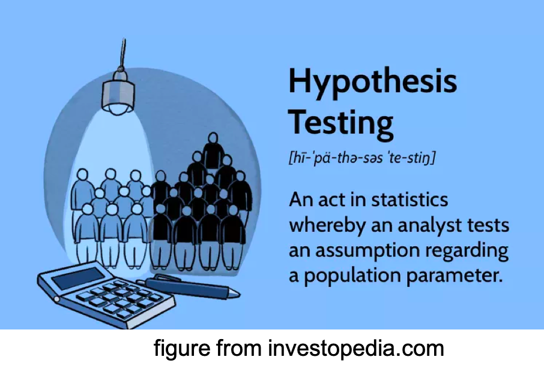
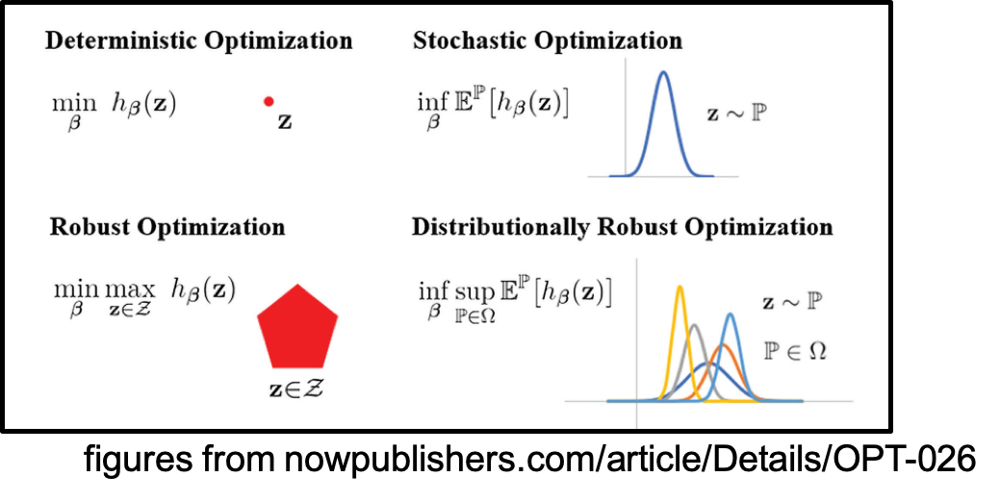

|
Research Statement
My long-term goal is to develop a dependable decision-making strategy to tackle data uncertainty, which is a common challenge in various real-life applications.
My research proposed methodologies to study different decision-making problems with offline, noisy, small-sample, or high-dimensional data.
On the one hand, we focus on developing computationally efficient methodologies through the lens of modern optimization techniques.
On the other hand, we provide strong performance guarantees of the proposed modeling leveraging tools from statistics. More specifically, my research focuses on:
Reliable Multi-Hop Network Communication
Reliable Statistical Hypothesis Testing
Distributionally Robust Optimization
Reliable Multi-Hop Network Communication
|
|
Over the past decade, wireless network communication products like WiFi and cellular networks have become widely accessible worldwide.
However, a prevalent challenge in the industry known as the “curse of multihop” refers to the significant decrease in network throughput as the number of transmission hops increases.
To combat this issue, a recently developed technique called batched network coding provides a computationally efficient solution.
In my research, I have focused on two aspects.
First, I provided theoretical analyses to determine the scaling rate of this technique with respect to the hop length, demonstrating its advantages over traditional approaches such as decode-and-forward.
Second, I designed an enhanced batched network coding methodology that incorporates considerations for the uncertainty associated with channel status.
Below I highlight manuscripts related to this topic:
|
Reliable Statistical Hypothesis Testing
|
 |
Hypothesis testing has long been a challenge in statistics, involving the decision to accept or reject a null hypothesis based on collected observations.
However, classical methods often struggle to address the challenges posed by the era of Big Data.
In my research, I have developed various modern hypothesis testing approaches to tackle these difficulties.
One recent focus of my work has been the development of an efficient hypothesis testing framework for high-dimensional data.
Traditional methods tend to exhibit significant performance degradation as the data dimension increases.
To overcome this issue, we employ a nonlinear dimensionality reduction operator that projects data distributions onto low-dimensional spaces with maximum separability.
Subsequently, we conduct hypothesis testing on the projected data.
Another aspect of my work involves bridging hypothesis tests with deep learning, thereby providing a statistical foundation for reliable machine learning.
Our objective is to establish systematic tools that offer statistical performance guarantees for hypothesis testing with neural networks.
This advancement enables modern classification algorithms to be more dependable and trustworthy in scientific discovery.
Furthermore, I have established close connections between hypothesis testing and recent advances in optimization to develop efficient testing methodologies for different scenarios.
For example, I employ distributionally robust optimization to establish a non-parametric test that assumes data distributions under each hypothesis belong to “uncertainty sets” constructed using the Sinkhorn distance.
Additionally, I consider variable selection for hypothesis testing, aiming to identify a small subset of variables in the data that best distinguish samples from different groups.
Due to its sparse nature, this problem is often formulated as a challenging NP-hard mixed-integer programming task.
To address the computational difficulties, both exact and approximation algorithms have been proposed.
|
Below I highlight manuscripts related to this topic:
Distributionally Robust Optimization
|
 |
Distributionally robust optimization (DRO) presents a promising approach to data-driven optimization by aiming to find a minimax robust optimal decision that minimizes the expected loss under the most adverse distribution within a given set of relevant distributions.
My research has focused on advancing theory, algorithms, and applications in this area.
From a theoretical perspective, I have developed a convex programming dual reformulation for DRO utilizing the entropic-regularized Wasserstein distance, also known as the Sinkhorn distance.
This formulation enhances the understanding and analysis of DRO.
In terms of algorithms, my work has contributed a first-order method that efficiently identifies near-optimal solutions with low computation and storage costs.
Surprisingly, the resulting problems in Sinkhorn distributionally robust optimization can generally be solved with a complexity level same to that of non-robust empirical risk minimization.
Furthermore, I have explored and discovered the advantages of DRO in various application domains, including reinforcement learning, hypothesis testing, sepsis prediction, network coding, and more.
These applications demonstrate the versatility and effectiveness of the DRO formulation in different contexts.
|
|